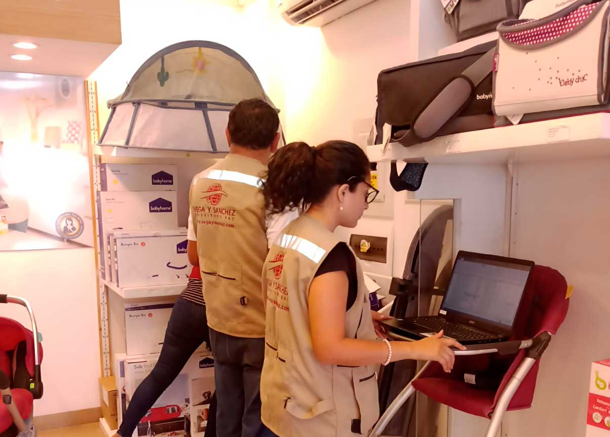

16 años de trayectoria definiendo la excelencia en gestión patrimonial del activo fijo y existencias.
Somos una empresa peruana con una sólida trayectoria en el mercado nacional, dedicada a brindar soluciones integrales en:
Contamos con un staff de profesionales altamente calificados, con 16 años de experiencia en el rubro, lo que nos permite garantizar un servicio de calidad, eficiente y personalizado a cada uno de nuestros clientes.
A lo largo de nuestra historia, hemos colaborado con las principales empresas del país, ayudándolas a optimizar sus recursos, cumplir con las normativas vigentes (NIIF / SUNAT) y tomar decisiones financieras más acertadas basadas en información real y conciliada.

Brindar servicios de consultoría de alta calidad en inventario físico y conciliación contable del activo fijo, inventario de existencias, tasaciones RNT y digitación documentaria, proporcionando a nuestros clientes información veraz, oportuna y confiable que maximice el valor de su patrimonio.
Ser reconocidos como la firma líder a nivel nacional en consultoría de activos fijos y existencias, destacándonos por nuestra innovación tecnológica soberana, rigor técnico pericial y compromiso inquebrantable con la ética profesional.
Nuestra experiencia y enfoque diferencial marcan el éxito de cada intervención.
Poseemos un compromiso de entrega con un alto estándar de calidad, respaldado por consultores que conocen a fondo la cultura y el entorno tributario-financiero nacional. Invertimos continuamente en la capacitación de nuestras brigadas de campo y en el perfeccionamiento algorítmico de nuestro software SGAF.
Garantizamos un servicio a su medida, con atención personalizada y total confidencialidad en el tratamiento de su información patrimonial.
Contáctenos hoy mismo y descubra cómo podemos ayudarle a potenciar el control y la rentabilidad de su empresa.
Solicitar Asesoría